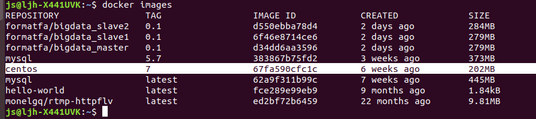
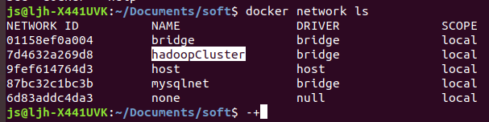
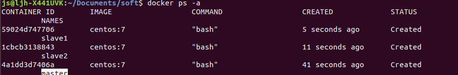
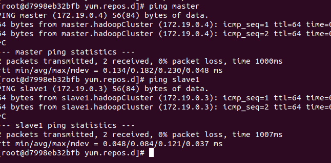
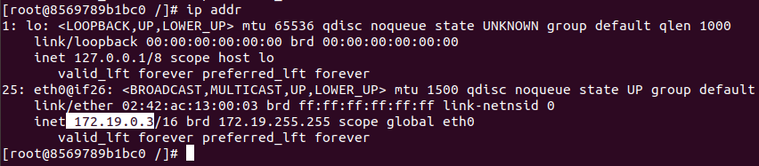
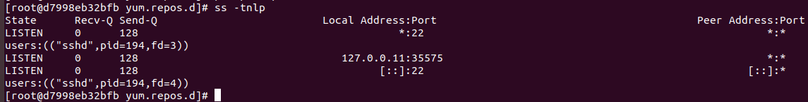

Docker 安装Hadoop HA 之前的准备
系统Ubuntu,安装有Docker,下载了centos:7的镜像

| 宿主机 | Ubuntu 18:04 | |
| Docker 版本 | 19.03.2 | |
| 安装Hadoop的镜像 | centos:7 | |
Docker 环境准备
创建一个docker 网络，用于集群使用
安装必要的包(如sshd,which(hdfs命令里用到), iproute),配置ssh
1. 创建一个docker 网络,名字为hadoopCluster
1 | docker network create hadoopCluster |

2. 创建三个容器, 名字分别为master,slave1,slave2
要求
使用centos:7镜像创建
创建时指定网络 为 hadoopCluster
指定运行的命令为bash (不指定一个命令的话,centos 启动后没有前台程序会自动退出),且要指定-it,不然一样会退出
10-9补充,命令可以改成
/usr/sbin/init指定容器的名字为master,slave1,slave2
(后面新增)使用-h指定容器的hostname
1 | docker create -it --network hadoopCluster -h master --name master centos:7 bash |

启动容器，安装镜像缺少的服务和软件,刚创建完的容器缺少一些必须的包,需要用yum安装
启动
1 | docker start master |
在命令行里进入容器命令
1 | docker exec -it master bash |
三台都安装下面的工具,直接用yum安装，
iproute 网络工具
yum install iproutewhich 命令
yum install whichpasswd命令默认有的
使用passwd命令设置三个容器的密码为passwd
passwd
因为在同一个network中，所以可以直接通过容器名互相ping

安装完iproute后，可以使用ip addr 命令查看容器的地址

安装ssh服务端和客户端，安装完的ssh不会自启动，需要手动启动
1 | //ssh服务端 |
创建密钥后重新启动,ss -tnlp查看开放的端口，发现22端口已经有了，就是成功

容器添加中文支持,默认没有中文字符集,vi编辑器等无法输入中文，输入会乱码

查看有的
locale -a1
2
3
4
5
6
7
8
9
10
11
12
13
14
15
16
17
18
19
20
21
22
23
24
25
26
27
28
29
30
31
32
33
34
35
36
37
38
39
40
41
42
43
44
45
46
47
48
49
50
51
52
53
54[root@slave3 ~]# locale -a
C
en_AG
en_AG.utf8
en_AU
en_AU.iso88591
en_AU.utf8
en_BW
en_BW.iso88591
en_BW.utf8
en_CA
en_CA.iso88591
en_CA.utf8
en_DK
en_DK.iso88591
en_DK.utf8
en_GB
en_GB.iso88591
en_GB.iso885915
en_GB.utf8
en_HK
en_HK.iso88591
en_HK.utf8
en_IE
en_IE@euro
en_IE.iso88591
en_IE.iso885915@euro
en_IE.utf8
en_IN
en_IN.utf8
en_NG
en_NG.utf8
en_NZ
en_NZ.iso88591
en_NZ.utf8
en_PH
en_PH.iso88591
en_PH.utf8
en_SG
en_SG.iso88591
en_SG.utf8
en_US
en_US.iso88591
en_US.iso885915
en_US.utf8
en_ZA
en_ZA.iso88591
en_ZA.utf8
en_ZM
en_ZM.utf8
en_ZW
en_ZW.iso88591
en_ZW.utf8
POSIX
- 修改环境变量,设置LC_ALL 为 en_US.utf8
这里修改~/.bashrc 文件
1 |
|
成功